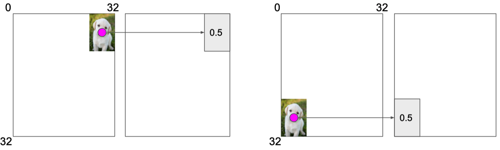

<h1 id="transformers-and-self-attention">Transformers and Self-Attention</h1>
<p>序列化的模型类似于RNN，存在几个问题：</p>
<ul>
<li>Sequential computation的计算限制了并行计算</li>
<li>没有对于short和long dependencies的显式建模</li>
<li>我们希望能够建模层级</li>
</ul>
<p>对于迁移不变性的解释。</p>
<figure>
<figcaption aria-hidden="true">image-20210329210505679</figcaption>
</figure>
<h2 id="section"></h2>
